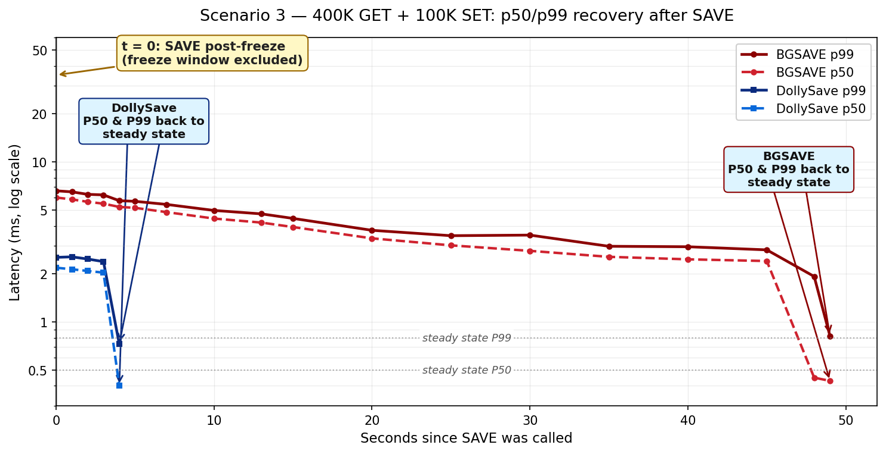
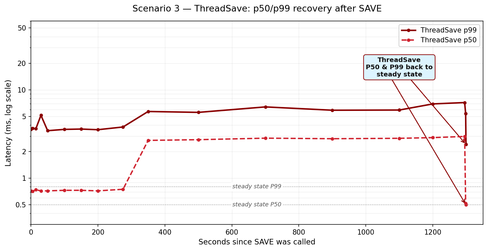
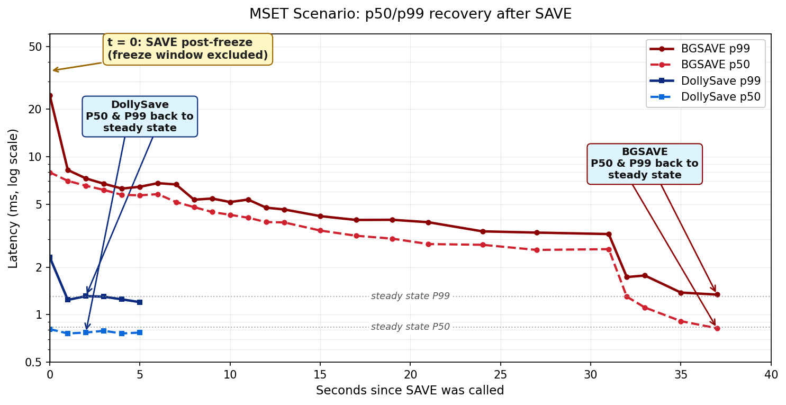
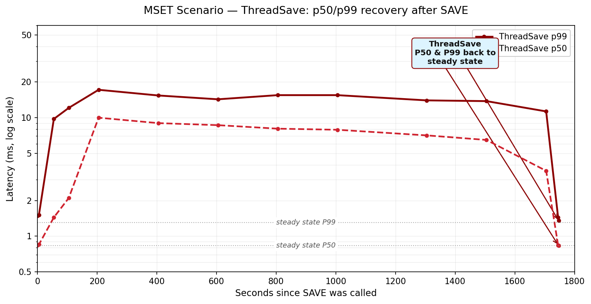
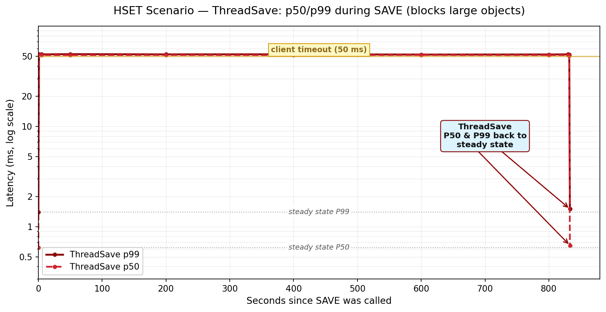

DollySave
A Faster Way to Save Valkey
Up to 70x Faster Saves
Zero OOM Risk
Minimal Latency Impact
Agenda
- BGSAVE - How it works and its limitations
- ThreadSave - The attempted fix and its problems
- DollySave - Experiment results and under the hood
Part 1
BGSAVE
The Traditional Approach
How BGSAVE Works
1. fork() creates a child process
↓
2. Copy-on-Write (COW) shares memory pages initially
↓
3. Child serializes data to RDB file
↓
4. Parent continues serving requests
Copy-on-Write Mechanism
Before Write
Shared memory
→
Every modified page = 4KB copy → Memory grows with write rate
BGSAVE Limitation #1: Fork Freeze
Hundreds of ms to 10 Seconds Freeze
- Kernel must copy all page tables
- Large dataset = millions of page table entries
- Valkey process is completely blocked
- All client requests queue up
BGSAVE Limitation #2: Memory Overhead
COW Memory Scales with Write Rate
- Each modified page = full 4KB page copy
- High write rates = massive memory growth
- Can double the used memory during save
- Requires reserving 25% memory headroom — which is not always enough
- Requests accumulate in client output buffer (delta)
BGSAVE Limitation #3: OOM
Out-of-Memory Under Load
- If COW exceeds available memory:
- Either crash — Linux OOM killer terminates process
- Or start swapping — disk is slow, latency spikes
- Cannot safely run at high memory utilization
Part 2
ThreadSave
The Attempted Solution
How ThreadSave Works
1. Track each dict entry with version numbers
↓
2. Background thread iterates through dict
↓
3. Serialize each entry to RDB format
↓
4. Skip entries modified during save
Goal: No fork() freeze, no COW overhead
ThreadSave Architecture
Primary Node
Main Thread
Serving
Clients
Save Thread
Serialize
RDB Format
Replica
V
Receiving
& Parsing RDB
Contention: Main thread and save thread must coordinate on shared data
ThreadSave Problem #1: Main Thread Impact
Takes Time from Main Thread
- Background thread competes for CPU with main thread
- Serialization requires coordination with main thread
- Latency can elevate significantly during save
- p50 can rise 3-14× throughout the save duration
ThreadSave Problem #2: Large Object Blocking
Clients Get Blocked
- P90 value size at fleet: 9.2MB
- Serializing + compressing 9.2MB takes 50-150ms
- Main thread must wait for lock on large objects
- Direct impact on P99 latency (or P50 with pipeline)
ThreadSave Problem #3: Multi-Key Commands
MSET and Similar Commands Block
- ThreadSave serializes keys in order
- If a write touches an already-transferred key → client blocked
- MSET writes 20 keys → high probability of hitting transferred key
- Blocking probability grows as save progresses
Affected: MSET, MSETNX, DEL, UNLINK, RENAME, SMOVE, LMOVE, EVAL, FCALL...
ThreadSave Problem #4: Pipeline Blocking
Head-of-Line Blocking
- Pipelining is the recommended way to use Valkey
- Used by: valkey-GLIDE, Lettuce, Redisson, valkey-py, SE.Redis, node.js clients
- If one key in pipeline is being serialized → entire pipeline waits
- Cascading delays across all pipelined commands
ThreadSave Problem #5: Sync Failures
58.5% Full Sync Failure Rate
- Save takes so long (20+ min), replica times out
- Replica disconnects, retries full sync
- Triggers another slow save
- Cascading failure loop
Data: us-east-1, Valkey 8+, last 30 days — 52K ThreadSave sync ops, 58.5% failed
Part 3
DollySave
Experiment Results
Scenario 1: No Traffic (Baseline)
300GB dataset, no background load
| Metric |
BGSAVE |
ThreadSave |
DollySave |
| Duration |
1102s (~18 min) |
1144s (~19 min) |
20.9s (52x faster) |
| Extra Memory |
2.28 GB |
< 0.1 GB |
< 0.1 GB |
| Process Freeze |
4207 ms |
0 |
233 ms |
Even with no traffic, BGSAVE takes 18 minutes. DollySave: 21 seconds.
Scenario 2: Mixed Traffic
400K GET/s + 100K SET/s
| Metric |
BGSAVE |
ThreadSave |
DollySave |
| Duration |
OOM crash |
1313s (~22 min) |
22.5s (58x faster) |
| Extra Memory |
~200 GB (OOM) |
< 0.1 GB |
< 0.15 GB |
| Process Freeze |
8346 ms |
0 |
1736 ms |
BGSAVE crashed with OOM!
Scenario 2: DollySave vs BGSAVE
Latency recovery comparison

DollySave (blue) recovers in ~4s; BGSAVE (red) takes ~49s before OOM
Scenario 2: ThreadSave Latency
Sustained elevated latency for 22 minutes

p50 at 2.8ms, p99 at 5-7ms for the entire 1313-second save
Scenario 3: MSET Workload
400K GET/s + 100K SET ops/s via MSET(20)
| Metric |
BGSAVE |
ThreadSave |
DollySave |
| Duration |
OOM crash |
1747s (~29 min) |
24.6s (71x faster) |
| Extra Memory |
~200 GB (OOM) |
< 0.1 GB |
< 0.15 GB |
| Process Freeze |
9564 ms |
0 |
1950 ms |
Scenario 3: DollySave MSET Latency
Immediate recovery after save starts

Clean latency profile - minimal impact
Scenario 3: ThreadSave MSET Latency
Multi-key blocking pattern

p50 at 6-11ms sustained for ~1747 seconds (29 minutes)
Scenario 4: Large Objects (Hash Tables)
3,000 hash tables × 100MB each, 140K HGET/s + 20K HSET/s
| Metric |
BGSAVE |
ThreadSave |
DollySave |
| Duration |
878s (~15 min) |
836s (~14 min) |
42.2s (20x faster) |
| Extra Memory |
102 GB |
< 0.1 GB |
< 0.1 GB |
| p50/p99 Impact |
None |
50ms timeout! |
Minimal |
Scenario 4: ThreadSave Large Objects
Clients blocked for entire save duration

Both p50 and p99 at client timeout for 836 seconds
🤔
"DollySave is only fast because it's multi-threaded..."
— Skeptics
Scenario 5: Small Instance (Single-Threaded)
r7g.xlarge, 220M keys × 50 bytes, no traffic
| Metric |
BGSAVE |
DollySave |
| Duration |
149.7s (~2.5 min) |
23.2s (6.5x faster) |
| Extra Memory |
149 MB |
9 MB |
| Process Freeze |
329 ms |
85 ms |
Not just parallelism: DollySave streams raw memory pages
instead of serializing objects — fundamentally faster
Part 4
DollySave
Under the Hood
Step 1: Clone the Process
CRIU creates an exact copy of the running Valkey process
V
Valkey Primary
Running & Serving
V
Valkey Clone
Exact Copy
Everything is cloned:
Memory
Threads
Locks
Signals
Timers
File Descriptors
The clone is identical — same state, same data, ready to run
Step 2: PSYNC to Catch Up
Now we have the same process — just need to sync the delta
V
Primary
Continued serving during clone
V
Clone
Catches up via replication
Under the Hood: The Five Phases
Phase 1: Setup
Write-protect all pages with userfaultfd WP_ASYNC
Phase 2a: Bulk Transfer
Stream entire memory via N parallel TCP + LZ4
Phase 2b: Converge
Re-send only dirty pages until set is small
Phase 3: Freeze
Capture final dirty pages + metadata (locks, threads, timers, signals...)
Phase 4: Handoff
Restore process on target
Design principle: Minimize freeze time by iteratively reducing the dirty page set
Under the Hood: userfaultfd WP_ASYNC
Kernel tracks dirty pages without page faults - process runs at full speed
1. Write-Protect
userfaultfd marks pages
→
2. Process Writes
Kernel records in bitmap
No page fault!
→
3. PAGEMAP_SCAN
Query modified pages
Requires Linux 6.7+ for
UFFD_FEATURE_WP_ASYNC
Under the Hood: Parallel Transfer
SOURCE
Valkey
300GB Memory
Process keeps running
N Parallel TCP Connections
1MB batches per transfer
TARGET
Replica
Staging Buffer
Pages installed in-place
15 GB/s
Transfer throughput
0
Extra memory allocation
In-place
Dirty pages overwrite old
DollySave: Limitations
- Linux kernel ≥ 6.7 required
Older kernels don't support userfaultfd WP_ASYNC
- Identical binaries required
Source and target must have same Valkey version and kernel
Scale up/down: No issues as long as binaries and kernel match
Handling Upgrades
DollySave requires identical binaries — how do we upgrade?
INTERMEDIATE
Valkey v8.1
(ephemeral)
Step 1: DollySave
Clone to intermediate node (same version)
Step 2: UPGRADE
Multi-threaded transfer to new version
Intermediate node is ephemeral — destroyed after upgrade completes
Handling Snapshots
DollySave produces memory images, not RDB files — how do we snapshot?
PRIMARY
Valkey
300GB memory
SNAPSHOT
Memory Image
Stored to disk/S3
RESTORED
Valkey
Ready in ~20s
Faster recovery: Restore 300GB dataset in ~20 seconds
vs minutes for RDB parsing
Snapshot Conversion
Background process converts memory images to RDB format
Fast Path
Restore from memory image
Same version only
Compatible Path
Restore from RDB
Any compatible version
Questions?
DollySave - Next Generation Persistence for Valkey